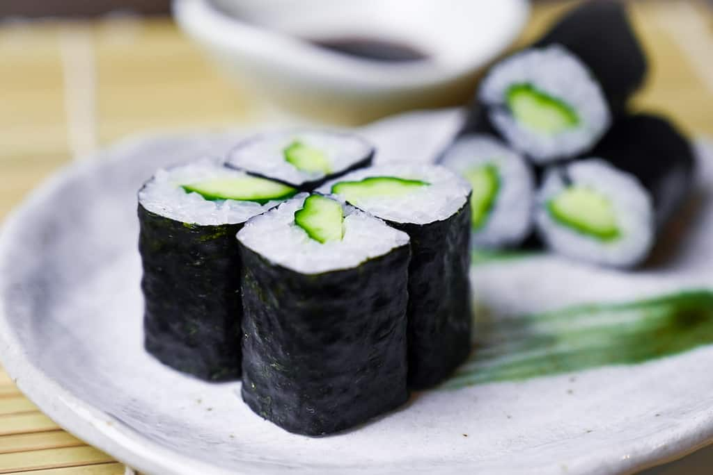

- Nori (seaweed sheets) - 4 sheets
- Sushi rice - 2 cups, prepared
- Cucumber - 1 medium, julienned
- Soy sauce - for dipping (optional)
- Wasabi paste - for serving (optional)
- Pickled ginger (gari) - for serving (optional)
|
- Place a bamboo sushi rolling mat (makisu) on a flat surface and cover it with plastic wrap.
- Place a nori sheet, shiny side down, on the plastic-covered mat.
- With moistened fingers, spread a thin layer of sushi rice evenly over the nori sheet, leaving a small border at the top edge.
- Arrange julienned cucumber strips horizontally along the center of the rice.
- Starting from the edge closest to you, lift the bamboo mat with your thumbs and roll it away from you, enclosing the filling. Press gently but firmly to shape the roll.
- Continue rolling until the entire sheet of nori is rolled up. Moisten the top border of the nori with a little water to seal the roll.
- Using a sharp knife, slice the roll into bite-sized pieces, wiping the knife with a damp cloth between cuts to keep the edges clean.
- Arrange the Kappa Maki pieces on a plate.
- Serve with soy sauce, wasabi paste, and pickled ginger on the side, if desired.
|

|